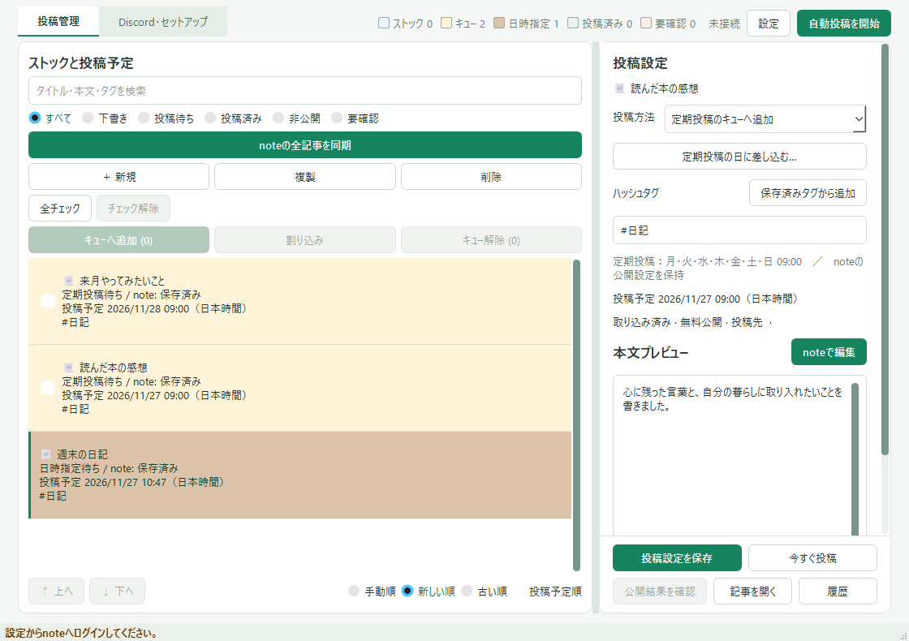
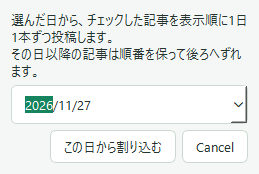
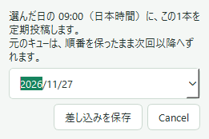

詳細説明書の目次
定期投稿・並べ替え・割り込み
投稿枠、複数記事の追加、ドラッグ、差し込み、枠を逃したとき
定期投稿の枠はどう決まるか
「設定」で曜日と時刻を決めると、その枠ごとにキューの先頭から1本を投稿します。たとえば毎日09:00なら、次の09:00に先頭、翌日の09:00に2本目という順です。指定した曜日だけを使う通常キューでは、その曜日の次の枠へ進みます。
日時を記事ごとに固定する「日時指定待ち」とは別です。キューの曜日や時刻を変えると定期投稿の予定が組み直されますが、茶色の日時指定記事の日時を変更する操作ではありません。
曜日と投稿時刻を設定する
- PC右上の「設定」を開きます。
- 「定期投稿」の曜日を1つ以上選びます。
- 「投稿時刻（日本時間）」を押します。
- 左の「時」、右の「分」をクリックして選び、「決定」を押します。
- 設定画面の保存表示と、記事一覧の投稿予定を確認します。

Escキーやパネル外を押して閉じた場合、選択途中の値は反映しません。数字の直接入力もできます。日付はこの共通時刻の設定では指定しません。
複数の記事を表示順でキューへ追加する


- 一覧で追加したい記事を探します。
- 記事のチェック欄を選びます。「全チェック」は現在表示しているチェック可能な行を選びます。
- 「キューへ追加」の件数を確認して押します。
- 処理結果と、記事が「定期投稿待ち」へ変わったことを確認します。
選んだ記事は表示順に既存キューの末尾へ入ります。既存のキュー記事を通常の追加で二重に入れる操作ではありません。まとめて追加して一部だけ失敗した場合は、件数と失敗理由を確認し、その記事だけを直してください。
検索や絞り込みを変える前に、選択件数を確認します。選び直したい場合は「チェック解除」で解除してください。
投稿予定順で並べ替える
- 一覧の「投稿待ち」を選びます。
- 並び順を「投稿予定順」にします。
- 黄色のキュー記事をドラッグし、移動先の日時を見ながら離します。
- 移動後の順番と日時を確認します。
茶色の日時指定記事はドラッグできません。定期投稿のキューを動かしても、日時指定記事は同じ日時を保持します。「手動順」の上下操作で記事を整理することと、投稿枠を変えるこの操作を区別してください。
状態が変わった、または期限を過ぎた割り込み日が残っている場合、並べ替えを拒否することがあります。対象記事の日付を修正してからやり直します。
複数の記事を途中へ割り込ませる


- 割り込ませたい下書き、またはキュー記事にチェックを付けます。
- 「割り込み」を押し、開始日を選びます。
- 「この日から割り込む」で実行します。
- 投稿予定順で、選んだ記事と後続記事の日時を確認します。
複数記事は、選んだ日から1日ずつ日付を進めて登録します。定期投稿に使わない曜日や、すでに時刻を過ぎた日などは受け付けられない場合があります。毎日以外の曜日設定では、全件が入ったと思い込まず処理結果を確認してください。
割り込みより後ろの記事は、順番を保ったまま日付が後ろへずれます。実装上、後続の日付を1日ずつずらして保持するため、曜日設定が毎日ではない場合も最終的な投稿予定日の確認が必要です。
1本だけ「定期投稿の日に差し込む」


- 先に記事を定期投稿のキューへ入れます。
- 対象記事の「定期投稿の日に差し込む…」を開きます。
- まだ実行されていない定期投稿の日を選び、「差し込みを保存」を押します。
その日の共通時刻にこの1本を投稿します。元のキューは順番を保って後ろへ移ります。使い終わった枠・対象外の曜日・過去の時刻は選べません。設定済みなら「差し込みを外す」で個別日を解除できます。記事をキューから外す「キュー解除」とは別です。
停止中に定期投稿の時刻を過ぎたら
通常の順番待ちキューは、過ぎた枠の本数をまとめて公開しません。未投稿の記事は残り、次の利用可能な枠で扱います。たとえば09:00を逃して10:00に再開しても、その日の分を自動で10:00に公開する意味ではありません。
個別の差し込み日を固定した記事は、その日が過去のまま残ることがあります。予定順を確認し、未来の日に差し込み直すか差し込みを外してください。「期限超過」となる日時指定予約と、通常キューの枠を逃すことは同じ扱いではありません。
キュー解除・再追加・設定の変更
PCでは、記事一覧で外したいキュー記事のチェック欄をオンにし、一覧上部の「キュー解除（件数）」を押します。記事をクリックして選択するだけでは対象になりません。チェックしたキュー記事がない間はボタンは無効です。Discordでは対象記事の詳細を開き「予約取消」を押します。記事本体は残ります。後で再追加すると、通常はその時点のキューの末尾へ入ります。
曜日・時刻の変更、記事の追加・削除・移動を行った後は、毎回「投稿待ち」「投稿予定順」で結果を確認してください。実際に公開するにはnote接続と取り込み済みの公開条件も必要です。